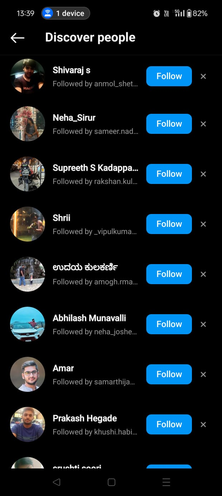

Introduction
Recommendation systems are pretty much everywhere these days, From the videos you watch on Instagram to the items you shop for online, they help in suggesting things you might like based on your past behavior and preferences. They're like your personal digital assistant, making sure you never run out of interesting content or products to check out.
Fig 1: A simple image showing a recoomendation system
We know there are various machine learning algorithms for recommendation of Instagram reels, web searches on browsers, YouTube videos, friends recoomendation on social media platforms etc. But do you know how your reels, content on web, youtube videos, friends recoomendation etc are stored in data bases, what data structure are used to store them? how your friend recoomendation find friends?
This portfolio will show you the role played by data structures and algorithms in recommendation systems across various subdomains such as Instagram Reels, storage enhancement, and word completion.
Instagram Feed Recommendation
Instagram's feed is tailored to each user based on their activity. The system recommends posts, reels, and stories from accounts you follow and also from accounts you might like.
Fig 4: A snapshot of an Instagram feed showing personalized recommendations.
Instagram Friends Recommendation
Instagram suggests friends based on mutual connections, interests, and activity. This helps you expand your network by connecting with people who share common interests or backgrounds.
Fig 5: Example of Instagram friend recommendations showing mutual connections.
Word Completion and Suggestion System
One of the coolest features in search engines is the autocomplete function, which suggests and completes words as you type. This feature makes searching faster and more efficient by predicting what you’re trying to type.
Fig 2: This shows the Google search bar when you type "G". Notice how it starts suggesting various queries starting with "G".
Fig 3: Here, when you type "Go", the suggestions become more refined, showing queries that start with "Go".